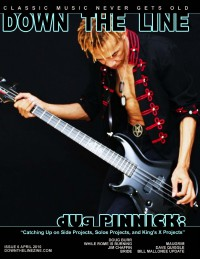

CMnexus
:
Contemporary Christian culture, music, and media.
Magazines
Profiles
Dove Awards
cmnexus.org
CM
nexus
→
Profiles
→
P
Doug Pinnick
On the cover

April 2010
Down The Line
Media coverage:
Sep 1993 in
Heaven's Metal
"Getting Honest With Doug Pinnick", by
Doug Van Pelt
May 1995 in
Heaven's Metal
"King's X Finally Vents"
Sum 1996 in
HM
"Lyric Writing 101"
Jul 1998 in
HM
"Doug Pinnick All By Himself", by
Doug Van Pelt
May 1999 in
HM
"No Room Inside The Box", by
Doug Van Pelt
Apr 2010 in
Down The Line
"dUg catches us up...", by
Steve Ruff
May 2010 in
Down The Line
"There Is No Room Inside A Box", by
Steve Ruff
Albums & reviews:
2005
:
Emotional Animal
Sep 2005 in
YouthWorker
, by
Dave Urbanski
Nov 2005 in
HM
, by
Doug Van Pelt
2007
:
Strum Sum Up
Apr 2010 in
Down The Line
, by
Steve Ruff
Books about Doug Pinnick
"
King's X
" in
The Encyclopedia of Contemporary Christian Music
(
Mark Allan Powell
,
2002
).
Chapter also includes:
King's X
,
Ty Tabor
.
Published articles:
2 articles credited in
HM
: 1995.
Credits list
CMnexus
(noun)
The magazine index
of modern music
and Christianity
© 2011 CMnexus. Last updated May 2025.
Contact:
Rants and other correspondence to:
editor -AT- cmnexus
-DØT- org
About